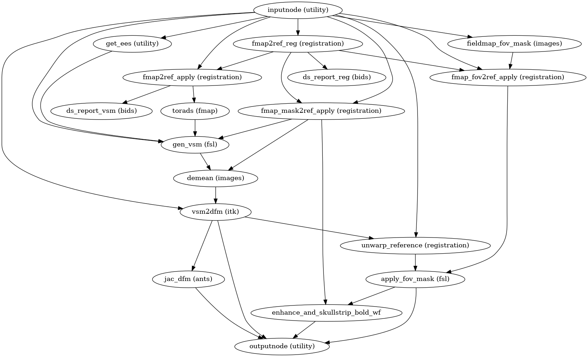

sdcflows.workflows.unwarp module¶
Unwarping¶
Abbreviations
- fmap
fieldmap
- VSM
voxel-shift map – a 3D nifti where displacements are in pixels (not mm)
- DFM
displacements field map – a nifti warp file compatible with ANTs (mm)
-
sdcflows.workflows.unwarp.init_fmap_unwarp_report_wf(name='fmap_unwarp_report_wf', forcedsyn=False)[source]¶ Save a reportlet showing how SDC unwarping performed.
This workflow generates and saves a reportlet showing the effect of fieldmap unwarping a BOLD image.

(Source code, png, svg, pdf)
Parameters
- namestr, optional
Workflow name (default: fmap_unwarp_report_wf)
- forcedsynbool, optional
Whether SyN-SDC was forced.
Inputs
- in_pre
Reference image, before unwarping
- in_post
Reference image, after unwarping
- in_seg
Segmentation of preprocessed structural image, including gray-matter (GM), white-matter (WM) and cerebrospinal fluid (CSF)
- in_xfm
Affine transform from T1 space to BOLD space (ITK format)
{kind=link}
{kind=link}
-
sdcflows.workflows.unwarp.init_sdc_unwarp_wf(omp_nthreads, fmap_demean, debug, name='sdc_unwarp_wf')[source]¶ Apply the warping given by a displacements fieldmap.
This workflow takes in a displacements fieldmap and calculates the corresponding displacements field (in other words, an ANTs-compatible warp file).
It also calculates a new mask for the input dataset that takes into account the distortions. The mask is restricted to the field of view of the fieldmap since outside of it corrections could not be performed.
(Source code, png, svg, pdf)
Inputs
- in_reference
the reference image
- in_reference_brain
the reference image (skull-stripped)
- in_mask
a brain mask corresponding to
in_reference- metadata
metadata associated to the
in_referenceEPI input- fmap
the fieldmap in Hz
- fmap_ref
the reference (anatomical) image corresponding to
fmap- fmap_mask
a brain mask corresponding to
fmap
Outputs
- out_reference
the
in_referenceafter unwarping- out_reference_brain
the
in_referenceafter unwarping and skullstripping- out_warp
the corresponding DFM compatible with ANTs
- out_jacobian
the jacobian of the field (for drop-out alleviation)
- out_mask
mask of the unwarped input file
{kind=link}
{kind=link}